New & Noteworthy
New & Noteworthy
Hier eine Liste mit den grösseren und interessanteren Änderungen in Portfolio Performance.
Version 0.21.1 (10. Januar 2016)
| Währungen | Konten und Wertpapiere können nun mit einer Währung versehen werden. Die historischen Wechselkurse werden automatisch von der Europäischen Zentralbank geladen.
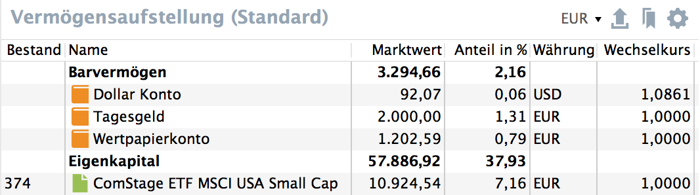 |
| Klassifizierungen klonen | Über das Kontextmenü können Klassifizierungen jetzt einfach kopiert werden. So kann man z.B. eine neue Asset Allocation ausprobieren ohne die alte direkt zu verlieren. Zusätzlich können die Einträge in der Seitennavigation nun nach oben bzw. nach unten verschoben werden.
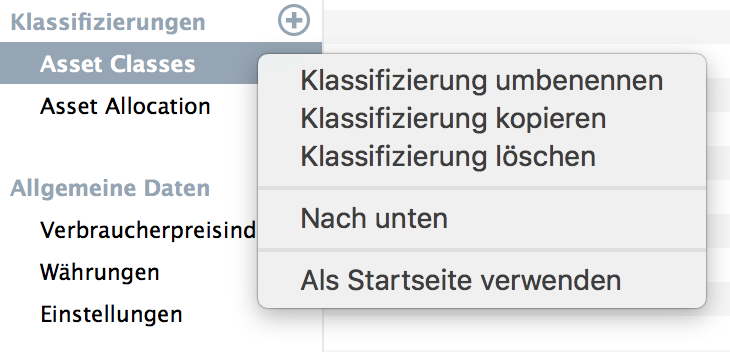 |
| Mehr Performance Kennzahlen | In der Vermögensaufstellung (die, so nebenbei, jetzt auch sortiert werden kann) gibt es weitere Performance-Kennzahlen. Der Tooltip am Spaltenkopf enthält ggf. mehr Informationen zu Berechnung.
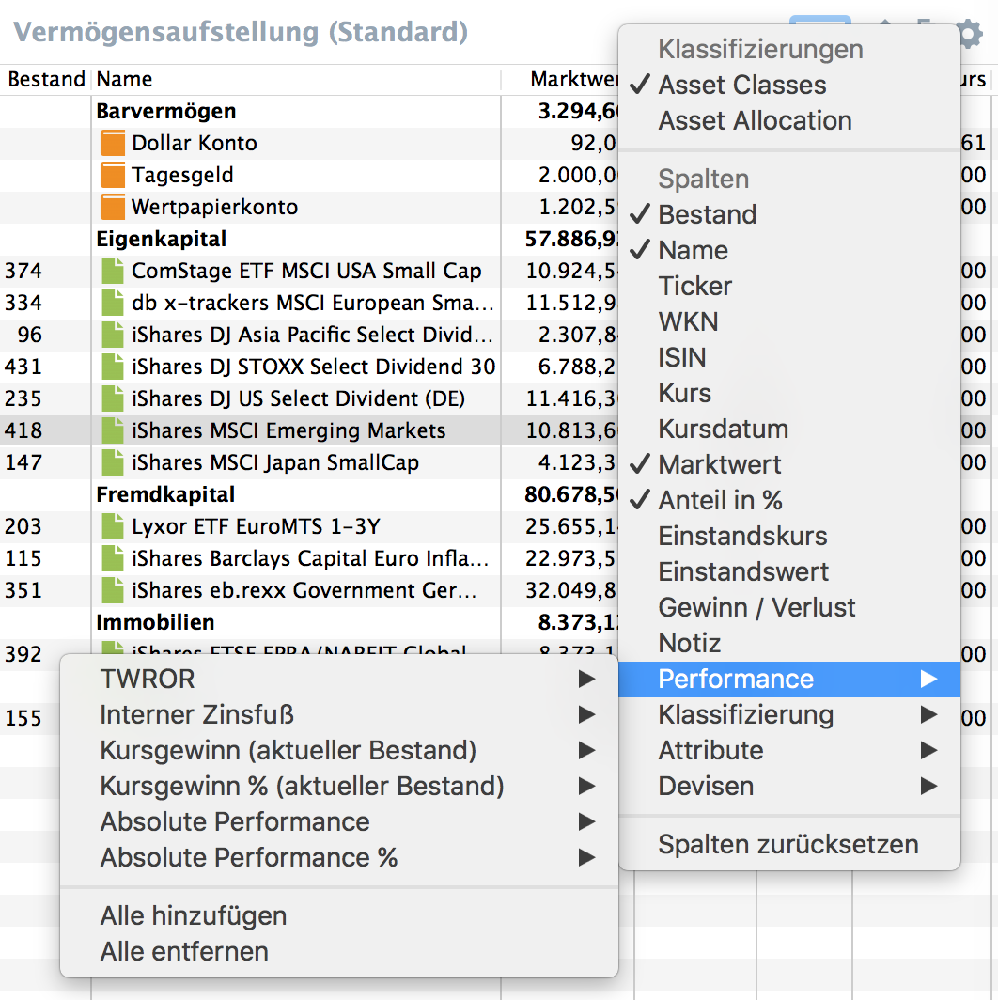 |
| Proxy Server | In den Einstellungen kann man nun den Proxy Server direkt konfigurieren. Und die Konfiguration wird nun auch für die Online Aktualisierung herangezogen.
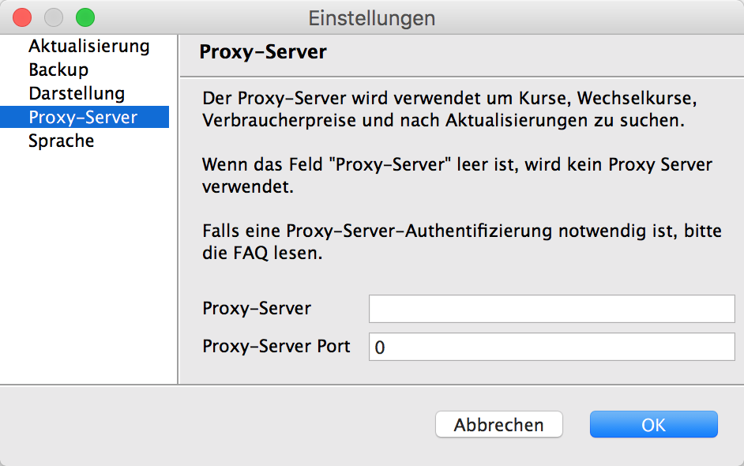 |
Version 0.20.0 (20. September 2015)
| Freie Attribute | Über die "Einstellungen" -> "Attribute" können jetzt frei Attribute definiert werden, für die man dann zu jedem Wertpapier Wert erfassen kann. Zum Beispiel könnte man ein Feld "Stop-Loss-Kurs" definieren um diese Information übersichtlich aufzubereiten. Die Attribute können in vielen Ansichten eingeblendet und auch direkt editiert werden.ne |
Version 0.19.0 (27. Juni 2015)
| Bookmarks verwalten | Über das Kontextmenü 'Wertpapier' -> 'Im Browser öffnen' könnte man schon immer passende Webseiten öffnen. Diese Bookmarks sind jetzt editierbar. Als Platzhalter stehen {isin}, {wkn}, {tickerSymbol} und {name} zur Verfügung. Die Bookmarks werden im XML gespeichert.
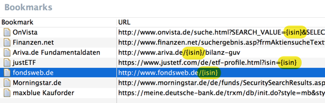 Vielen Dank an alani für die Contribution! |
| Interactive Brokers | Über 'Datei' -> 'Importieren...' -> 'Interactive Brokers Activity Statement' kann man Buchungen aus dem Activity Statement importieren. Wiederum vielen Dank an alani für die Contribution! |
Version 0.18.0 (31. Mai 2015)
| Verbesserte Diagramme | Für die Klassifikationen gibt es jetzt ein Flare-Chart. Auch das Kuchendiagramm für die Bestände ist jetzt besser und hat unter anderen Tooltips.
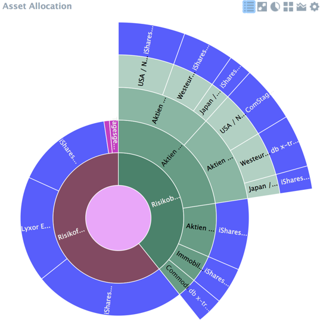 |
| PDF Import | Keine Lust Buchungen manuell einzugeben? Mittlerweile kann man Kauf-/Verkauf- und Dividendenbuchungen aus den PDF Dokumenten verschiedener Banken einlesen. Aktuell werden comdirect, Consorsbank, DAB Bank, Deutschen Bank und Flatex unterstützt. Da sich das Format dieser Dokumente immer wieder mal ändert, kann man über "Datei" -> "Importieren" -> "Debug: Text aus PDF extrahieren..." eine Textversion erstellen mit der wir den Import weiter verbessern können. |
Version 0.17.0 (22. Februar 2015)
| Historische Performance und Volatilität | Mit diesem Diagramm kann man jetzt die historische Performance (TTWROR) mit der Volatilität in Beziehung setzen.
Die Volatilität wird aus den täglichen Veränderungen der Position errechnet. In dem Berichtszeitraum werden alle Werte genommen, die nicht auf ein Wochenende oder einen Feiertag fallen (Weihnachten, Ostern, 1. Mai, Neujahr). Mit Hilfe des Exports (oben rechts) kann man sich die Basisdaten als CSV Datei speichern und so die Rechnung mit Excel und der STABWN Formel nachvollziehen. Die ganze Berechnung steht und fällt natürlich mit den historischen Kursen - da braucht es eine sehr gute Basis! 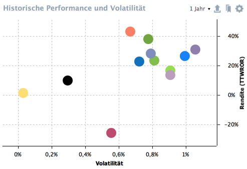 |
Version 0.16.0 (8. Februar 2015)
| Risikokennzahlen | Performance ist die eine Seite der Medaille, Risiko die andere. Mit dieser Version werden zwei Risikokennzahlen für das Gesamtportfolio berechnet: Maximum Drawdown und Volatilität.
Der Maximum Drawdown stellt den maximalen kumulierten Verlust innerhalb der betrachteten Periode dar. Die Volatilität gibt an, wie stark ein Kurs schwankt. Je höher die Volatilität ist, desto stärkere Schwankungen müssen eingeplant werden, sowohl nach Oben als auch nach Unten. 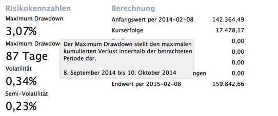 |
| Diagramme | In den Diagrammen zu Klassifizierungen kann man nun die nicht-klassifizierten Wertpapiere ausblenden. Zusätzlich kann man beim Stapeldiagramm die Wertpapiere statt nach Grösse nach ihrer Reihenfolge in der Klassifizierung sortieren.
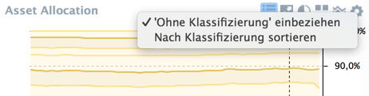 |
Version 0.15.0 (30. November 2014)
| Kurse | Mit dieser Version kann man unterschiedliche Kurslieferanten für historische und aktuelle Kurse konfigurieren. So kann man zum Beispiel die historischen Kurse aus einer Webseite laden, aber Yahoo Finance für den aktuellen Kurs verwenden.
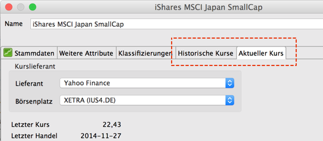 |
| Steuerrückerstattung | Steuern konnte man schon immer erfassen. Jetzt kann man auch eine mögliche Rückerstattung erfassen. Eine Steuerrückerstattung kann, muss sich aber nicht auf ein Wertpapier beziehen. |
| Startseite festlegen | Nach dem Öffnen lieber direkt in die Performance-Übersicht? Kein Problem! Mit einem Rechtsklick in die Seitenleiste kann man jede Seite als Startseite festlegen.
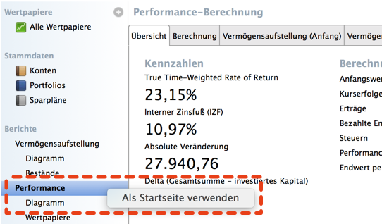 |
Version 0.14.0 (10. August 2014)
| Zoom | Jetzt kann man (endlich!) in die Liniendiagramme zoomen. Und so geht es:
Die dem Diagramm zugrunde liegenden Zahlenwerte erhält man weiterhin mit der gedrückten linken Maustaste.
|
| Steuern für Wertpapierverkäufe | Steuern, die bei einem Verkauf eines Wertpapieres anfallen, können jetzt direkt in der Buchung erfasst werden. Die Steuern werden separat in der Performance-Übersicht aufgeführt, können per CSV exportiert und importiert werden, und werden auch im Diagramm angezeigt. |

Version 0.13.0 (1. Juni 2014)
| AES Verschlüsselung | Die Portfolio Datei kann jetzt optional auch verschlüsselt werden. Zur Verfügung steht AES mit 128 oder 256 Bit Schlüssellänge. Auf Grund von Import-/Export Restriktionen muss die Java Laufzeitumgebung eventuell erst noch für AES-256 vorbereitet werden. Mehr Details dazu wenn man "Speichern als" -> "AES-256 verschlüsselt" wählt.
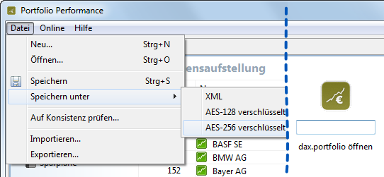 |
| Investiertes Kapital | Im Diagramm der Vermögensaufstellung gibt es jetzt drei neue Werte: Investiertes Kapital (auf den Berichtszeitraum bezogen), das Delta - also die Differenz zwischen dem aktuellen Gesamtwert und dem investierten Kapital - sowie die akkumulierten Steuern.
|
| Weitere Attribute | Zu Wertpapieren können jetzt drei weitere Attribute erfasst werden: Gesamtkostenquote (TER), Fondsgröße und Anbieter. Diese Attribute können selbstverständlich in allen Tabelle hinzugefügt werden. So kann man recht einfach eine Asset Allocation anlegen und beim Rebalancing TER im Blick halten.
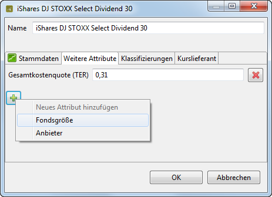 |
| Zellen direkt editieren | Per Doppelklick in die Zelle kann man jetzt (fast) alle Werte direkt editieren. Per Tab springt man in die nächste Zelle. Auf diese Weise kann man zum Beispiel recht schnell alle TER Werte für Wertpapiere erfassen.
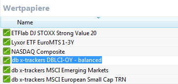 |

Version 0.12.0 (23. März 2014)
| Aktiensplits einpflegen | Mit dem neuen Wizards kann man nur Aktiensplits einpflegen. Dabei werden dann (optional) alle Buchungen angepasst, also Kauf-/Verkaufbuchungen als auch Dividendenbuchungen (Stücke auf die sich die Dividendenzahlung bezieht). Genauso können die historischen Kurse angepasst werden.
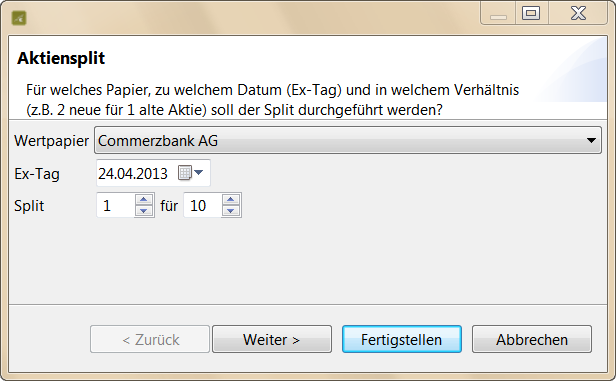 Aktiensplits werden im Chart eingetragen: 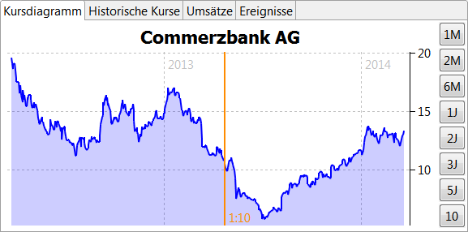 |
Version 0.11.0 (23. Februar 2014)
| Verbesserte Wertpapier-Performance | Die Wertpapier-Performance zeigt nun mehr Werte an: True Time-Weighted Rate of Return, Einstandswerte nach FIFO, Summe und Anzahl der Dividendenzahlungen und eine Dividenden-Performance bezogen auf den Einstandswert.
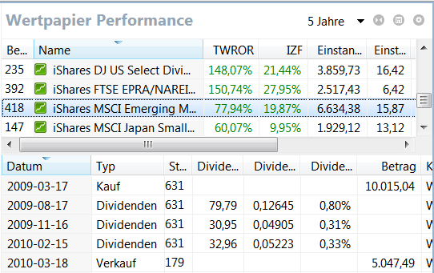 |
| Notizen erfassen | Zu Wertpapieren, Konten, Portfolios und Buchungen kann man jetzt (kurze) Notizen erfassen.
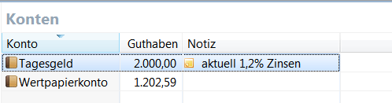 |
Version 0.10.0 (26. Januar 2014)
| Kurse aus HTML Seiten | Yahoo hat keine Kurse zu einem Wertpapier? Jetzt kann man jetzt eine URL hinterlegen von Kurse extrahiert werden!
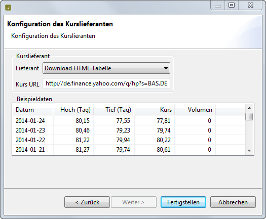 Bitte folgende Punkte beachten:
Dieses Feature ist noch nicht komplett ausgereift - ich bin über Feedback dankbar! Im Fehlerprotokoll findet sich immer der komplette HTML Code falls keine Kurse gefunden werden konnten. |
| Inaktive Konten | Zu vielen nicht mehr genutzte Festgeldkonten? Jetzt als inaktiv markieren und filtern!
Diese Konten werden auch nicht mehr in den Dialogen angezeigt - so erhöht sich die Übersicht.
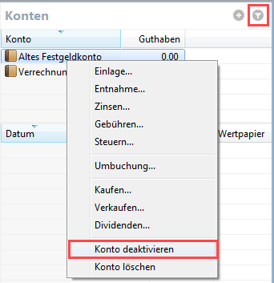 |
Version 0.9.0 (25. August 2013)
| Freie Klassifizierung | Mit dieser Version können die Wertpapiere und Konten frei klassifiziert und anschließend ausgewertet werden.
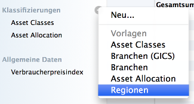 Die bisherigen Systeme (Asset Klassen, Asset Allocation und Branchenklassifizierung) bleiben erhalten und können jetzt editiert werden. Wertpapiere können dabei auch mehreren Kategorien zugeordnet werden. Per Drag & Drop sortiert man die Kategorien in jede beliebige Reihenfolge. 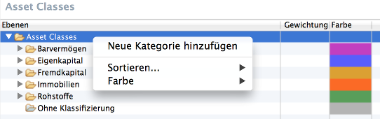 Die Vermögensaufstellung des Gesamtportfolios kann nach jeder Klassifizierung gruppiert werden. 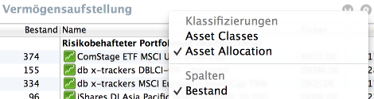 |
Version 0.8.0 (27. Juni 2013)
| Sparpläne | Mit dem neuen Feature Sparplan kann man wiederkehrende Wertpapierkäufe automatisch generieren. Vielen Dank an simpsus für die Code Contribution.
Im ersten Schritt legt man einen Sparplan an: 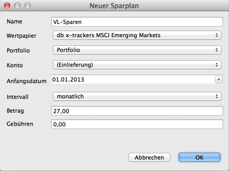 Im zweiten Schritt kann man die fehlenden Buchungen generieren: 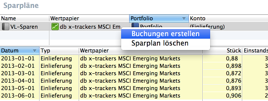 |
| Konfigurationen speichern | Jetzt ist es möglich mehrere Konfigurationen eines Diagramms zu speichern. Schluss mit dem ständigen Hinzufügen und Entfernen von Vergleichswerten.
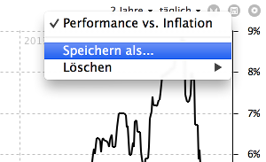 |
Version 0.7.11 (20. Mai 2013)
| 'Datei -> Neu...' Wizard | Mit dem Wizard kann eine XML Datei bequem neu angelegt werden - inklusive vorkonfigurierter Wertpapiere. Vielen Dank an simpsus für die Code Contribution.
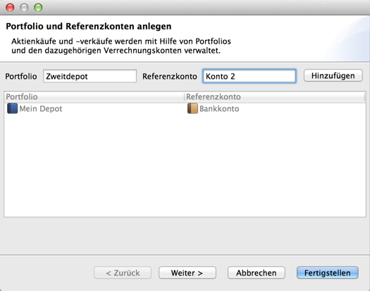 |
| Vergleichswerte im Performance-Diagramm | Unter Performance -> Diagramm können jetzt Depots, Konten, Asset Klassen und Kategorien der Asset Allocation dem Diagramm hinzugefügt werden.
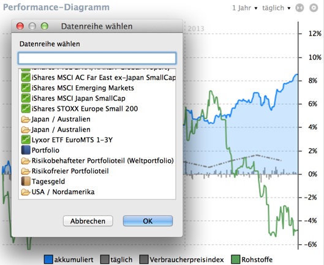 Diagramm: einzelne Konten, Depots, Kategorien, Asset Klassen" width="529" height="433"/> |
| Frei konfigurierbare Farben | Endlich: Farben (und Linien und Fläche) frei konfigurieren. Die Einstellungen werden ebenfalls in der XML Datei gespeichert und stehen beim nächsten Öffnen wieder zur Verfügung.
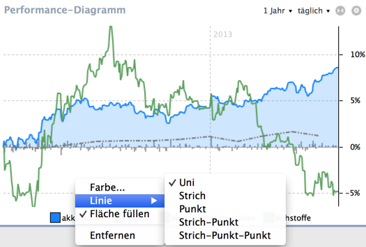 |
| Erträge nach Konten | Unter dem Reiter 'Erträge nach Konten' in der Performance-Berechnung werden die Erträge jetzt auch nach Konten gruppiert angezeigt. Müssen vielleicht die Freistellungsaufträge neu verteilt werden?
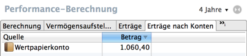 |
| Datum des letzten Kurses | Der Wertpapier-Liste können die Spalten mit dem Datum des letzter bzw. letzer historischer Kurses hinzugefügt werden. Dabei werden Werte, die älter als 7 Tage sind, farblich hevorgehoben um Probleme mit dem automatischen Kursdownload schneller zu erkennen.
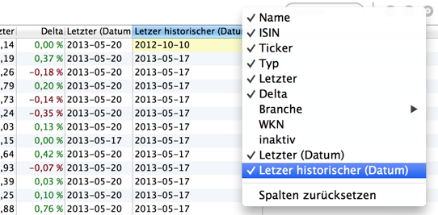 |
Version 0.7.10 (21. April 2013)
| Vergleichswerte im Diagramm | Unter Vermögensaufstellung -> Diagramm können jetzt Depots, Konten, Kategorien aus der Asset Allocation und einzelne Wertpapiere dem Diagramm hinzufügt werden.
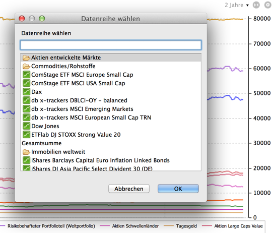 Diagramm hinzufügen" width="542" height="462"/> |
Version 0.7.7 (17. März 2013)
| Gegenbuchungen | Ein Kauf von Wertpapieren besteht aus zwei Buchungen: einer Buchung im Portfolio und einer Buchung auf einem Konto. Bisher waren das zwei unabhängige Buchungen, die auch unabhängig voneinander editiert werden konnten. Das führte nicht nur zu schrägen Ergebnissen in der Performance-Berechnung, sondern machte auch eine nachträgliche Änderung von Buchungen aufwendig. Damit ist jetzt Schluß: ab sofort werden Gegenbuchungen korrekt editiert.
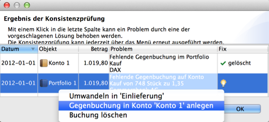 Der vorstehende Dialog zeigt existierende Probleme mit fehlenden Gegenbuchungen an. Diese Konsistenzprüfung läuft automatisch nach dem Öffnen einer Datei, kann aber auch über das Datei Menü gestartet werden. Ein Klick in die letzte Spalte listet Aktionen auf mit denen das Problem behoben werden kann. |
Version 0.7.6 (24. Februar 2013)
| Flexible Berichtszeiträume | Jetzt gibt es benutzerdefinierte Zeiträume - endlich! Mit dem neuen Dialog kann man jetzt nicht nur die letzten X Jahre (oder Monate) anzeigen lassen, sondern alternativ auch ein ganz bestimmtes Datum erfassen (zum Beispiel den Depoteröffnungszeitpunkt). Die letzten 5 Zeiträume stehen in allen Ansichten zur Verfügung - so kann man alle Berichte / Diagramme für einen Zeitraum schnell abrufen.
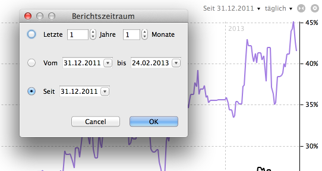 |
| Verbesserte Performance-Berechnung | Mit dieser Version wird die Performance im Diagramm nicht mehr mit dem internen Zinsfuß (IZF) sondern als tagesaktuelle Änderung gegenüber dem Vortag berechnet. Performanceneutrale Bewegungen wie Ein-/Auszahlungen und Einlieferungen oder Auslieferungen werden natürlich berücksichtigt und nicht mitgerechnet. Die Werte können auch wöchentlich, monatlich, quartalsweise oder jährlich aggregiert werden.
Damit stellt sich ein Investment in einen Index jetzt identisch zum Index selbst dar (vorausgesetzt natürlich dass es keine Transaktionskosten gibt). Über den Export Button oben rechts kann man die Details der Berechnung als CSV Datei runterladen um die Rechnung nachzuvollziehen. 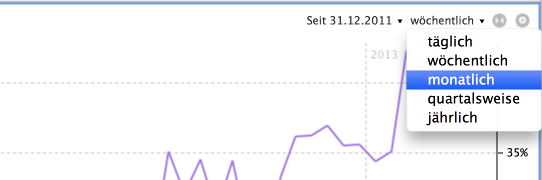 |
Version 0.7.5 (3. Februar 2013)
| Inaktive Wertpapiere | Markiere Wertpapiere als 'inaktiv' damit sie in den Kaufdialogen nicht mehr auftauchen. So kann man steuern, dass zum Beispiel getilgte Anleihen nicht mehr sichtbar sind und die Liste der Papiere sich reduziert. Ganz löschen kann man getilgte Anleihen natürlich nicht: die Daten werden zur Berechnung der historischen Performance benötigt. |
| Erweiterter Kursexport | Exportiere alle Wertpapierkurse in eine Datei mit 'Exportieren...' -> 'Wertpapiere' -> 'Alle historischen Kurse'. In der ersten Spalte steht das Datum, anschließend gibt es je eine Spalte für jedes Wertpapier. |
Version 0.7.4 (5. Januar 2013)
| Kontextinfos im Diagramm | In den Diagrammen gibt es jetzt Kontextinformationen mit den genauen Werten des anvisierten Punktes.
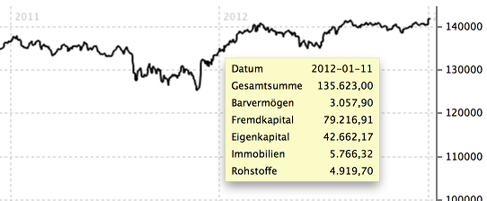 |
| Aufstellung der Erträge | Eine neue Aufstellung der Erträge gibt einen Überblick wann welche Dividenden oder Zinsen im Berichtszeitraum angefallen sind. Vielleicht dient diese Aufstellung auch der Vorfreude auf die Dividenden des kommenden Jahres - zumindest wenn man keine Papiere verkauft. :-)
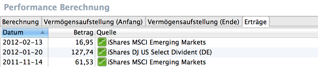 |
Version 0.7.0 (11. November 2012)
| Neue Bespieldatei: dax.xml | Im Installationsverzeichnis gibt es eine neue Datei dax.xml, die ein prototypisches DAX Investment trackt. |
| Klassifizierung der Branchen | Zur besseren Auswertung kann jetzt jedes Wertpapier einer Branche zugeordnet werden:
Zur Auswertung kann man eine wunderschöne TreeMap verwenden. Mit einem Rechtsklick taucht man in eine Branche ab, mit einem Linksklick gelangt man wieder zurück. 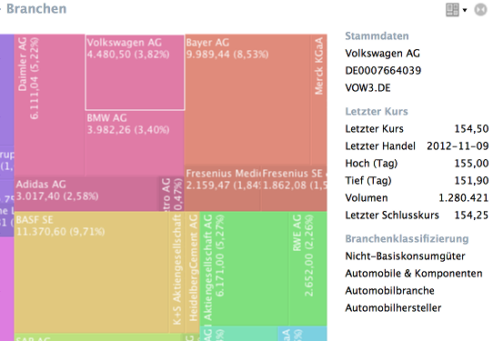 Im Bereich 'Stammdaten' gibt es ein Überblick über die Branchen: 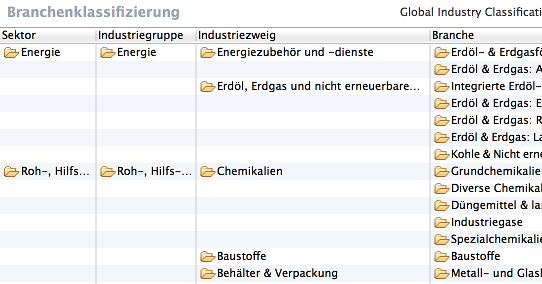 Dort kann man auch das Klassifizierungssystem auswählen (Mit der Schaltfläche 'Anwenden' wird die Klassifizierung für die aktuelle Datei aktiviert): 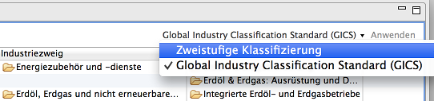 Im Dialog 'Wertpapier bearbeiten' wird eine Branche einem Wertpapier zugeordnet: 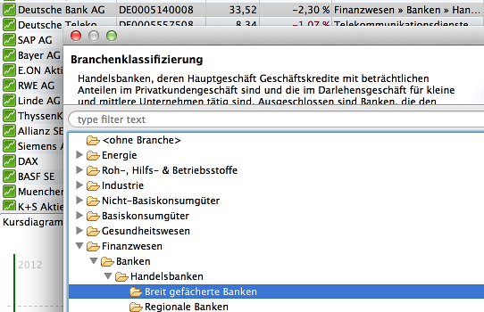 |
| Performance Chart: Vergleich mit einem anderen Papier | Dem Performance Chart können nun beliebige andere Papiere zugeordnet werden. Damit lässt sich die Performance des Portfolio einfach vergleichen. Das funktioniert auch mit einem Index. Der DAX ist zum Beispiel auf Yahoo unter dem Symbol ^GDAXI verfügbar.
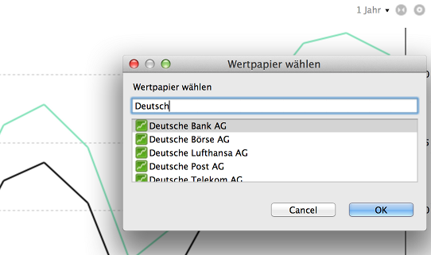 |
| Mehr Exportmöglichkeiten | Alle Daten aus dem Programm holen! Mit der neuen Version können jetzt auch die Basisdaten der Diagramme als CSV exportiert werden. So lassen sich zum Beispiel sehr einfach Diagramme in Excel erstellen.
Die Exportfunktion befindet oben rechts. 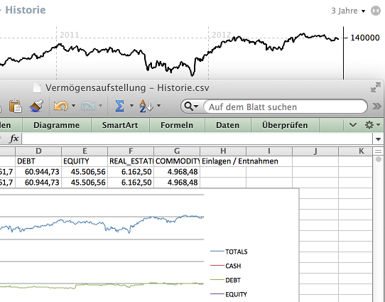 Auch die Asset Klassen lassen sich exportieren: 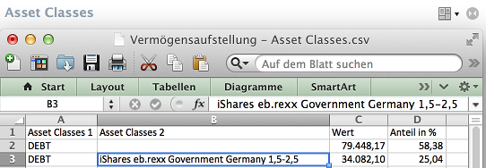 |
Version 0.6.4 (19. August 2012)
| Öffnen im Browser | In der Wertpapierliste und der Vermögensaufstellung kann man nun direkt zu den
Seiten von Yahoo, OnVista und Finanzen.net dieses Wertpapiers springen.
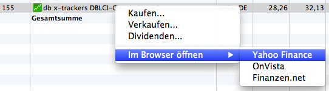 |
Version 0.6.1 (14. Juli 2012)
| Automatische Aktualisierung | Mit dem Menü "Nach Aktualisierungen suchen..." werden neue Programmversionen
installiert. Dabei werden nur die geänderten Komponenten geladen, wodurch das Update deutlich schneller wird.
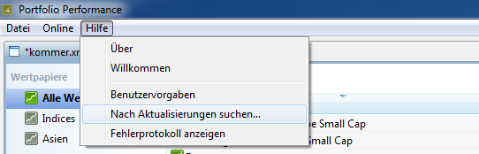 Optional kann man in den Einstellungen (oder auch 'Benutzervorgaben') festlegen, dass bei jedem Start auf vorhanden Updates geprüft wird. 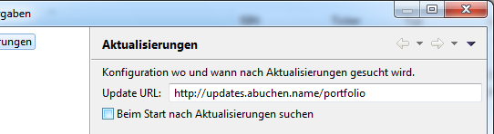 |
| IFZ in der Vermögensaufstellung | Neue Spalten in der Vermögensaufstellung:
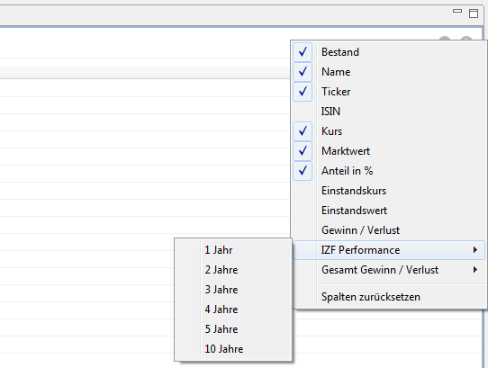 Durchsucht werden Bezeichnung, ISIN und das Ticker Symbol. |
Version 0.6.0 (17. Juni 2012)
| Zusätzliche Spalten | In der Vermögensaufstellung kann man zusätzliche Spalten hinzufügen:
ISIN, Einstandskurs, Einstandswert und Gewinn/Verlust
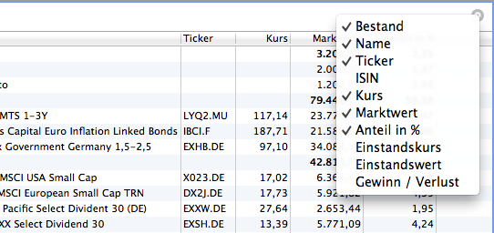 Mit den zusätzlichen Spalten kann man die Vermögensaufstellung an die eigenen Bedürfnisse anpassen. Per Drag & Drop kann die Reihenfolge der Spalten geändert werden. Alle diese Änderungen werden gespeichert damit die Ansicht beim nächsten Öffnen genauso wieder aussieht. |
| Suchen | In der Liste der Wertpapiere kann man jetzt suchen:
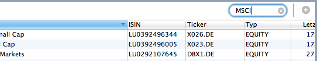 Durchsucht werden Bezeichnung, ISIN und das Ticker Symbol. |
| Watchlisten | Zur besseren Übersicht kann man Watchlisten in der Seitenleiste anlegen:
Die Wertpapiere kann man per Drag & Drop aus der Wertpapierliste in die Watchliste einfügen: Das funktioniert auch zwischen zwei Dateien, die gleichzeitig geöffnet sind: |
Version 0.5.4 (20. Mai 2012)
| CSV Import | Importiere Konto- und Portfolioumsätze sowie Kursdaten aus CSV Dateien.
Durch einen Doppelklick in eine Spalte kann bestimmt werden, in welchem Format die Rohwerte vorliegen und in welches Feld sie abgebildet werden sollen. Falls eine ISIN nicht bekannt ist, wird ein neues Wertpapier angelegt und die Buchung damit verknüpft. |
| Bruchteile | Bruchteile bei Wertpapierpositionen
Jetzt können Bruchteile von Wertpapieren gekauft werden und so zum Beispiel Sparpläne abgebildet werden. Das Programm rechnet mit einer Genauigkeit von 5 Nachkommastellen. Um die Übersichtlichkeit zu wahren, wird der Bestand in der Übersicht auf 3 Nachkommastellen gerundet. |
| Tab in Tabellen | Per Tab zum nächsten Eingabefeld
Durch einen Doppelklick eine Zelle gelangt man in den Editiermodus. Per Tab geht es zur nächsten Zelle weiter. |
Lizenz
Portfolio Performance ist Open Source Software: Eclipse Public License - v1.0